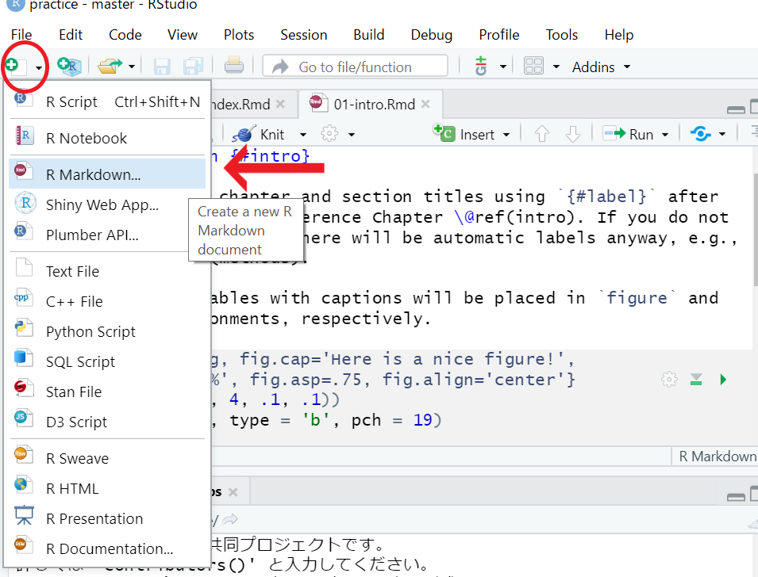
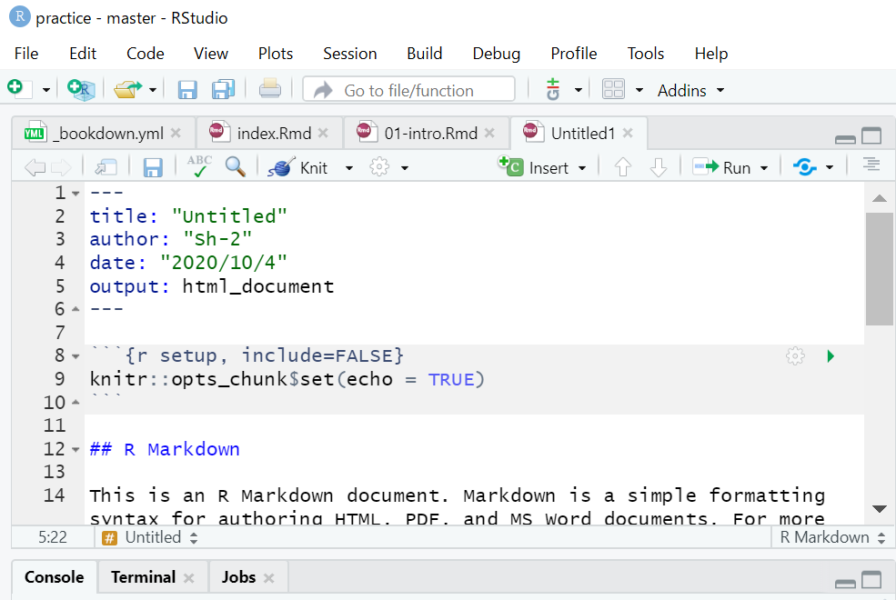
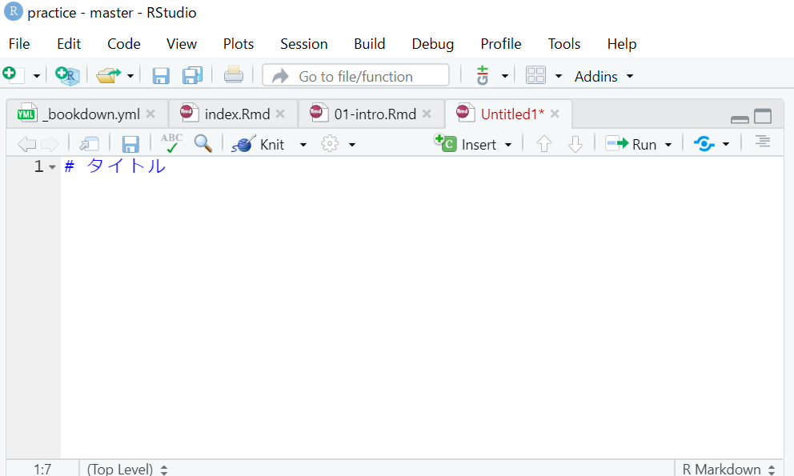

Chapter 4 ページの編集
このchapterでは、テンプレを書き換えて自分の好きなサイトを作っていきます。
すべて説明しきれないため、あまり深入りせずに簡潔に説明します。詳しくは公式で確認お願いします。
もしくは私のリモートリポジトリから、このサイトのプロジェクトフォルダをダウンロードして、見比べながら作業してみてください。
4.1 _bookdown.yml
output_dir: "docs"を追記するだけで構いません。(chapter 2参照)
Githubはdocsというフォルダがあれば、その中身をWebサイトとして公開してくれるため、このように指定しています。
4.2 _output.yml
bookdown::gitbook:
css: style.css
config:
toc:
before: |
<li><a href="./"> ここにサイトタイトルを書きます </a></li>
after: |
<li><a href="https://github.com/rstudio/bookdown" target="blank">Published with bookdown</a></li>
download: ["pdf", "epub"]
bookdown::pdf_book:
includes:
in_header: preamble.tex
latex_engine: xelatex
citation_package: natbib
keep_tex: yes
bookdown::epub_book: defaultサイトタイトルの部分に好きなタイトルを書きましょう。このサイトだと左上の「bookdownとGitHubでWebpage制作」の位置に当たります。
_output.ymlでは出力されるhtmlの構成を変える設定などを記述できます。(html widgetを多く使う場合などで、必要になるかもしれません。多くの場合、気にする必要はありません。)
4.3 .Rmdファイル（Rマークダウンファイル）
Rmdファイルは本文に当たる部分です。マークダウン記法で記入していき、これがbuild時にhtmlに変換されます。
マークダウンの書き方は、検索すれば良いサイトが多くあります。自身で調べてみてください。参考に一つ挙げておきます。
Qiita マークダウン記法 一覧表・チートシート
4.3.1 index.Rmd
このサイトの「初めに」のようなトップページに当たります。
本文はマークダウン記法で記入しますが、index.Rmdのみ---で囲まれた中に設定を書く必要があります。
とはいえ、デフォルトのものを書き換える程度なので、簡単にできます。例としてこのサイトのindex.Rmdを載せておきます。
--- この---に囲まれた部分はindexの設定になります。
title: "bookdownとGithubでWebサイト制作" タイトル
author: "Sh-2" 筆者の名前
date: "2021-06-15" 更新日が自動で取得されます
site: bookdown::bookdown_site
documentclass: book
bibliography: [book.bib, packages.bib]
biblio-style: apalike
link-citations: yes
description: "RのbookdownパッケージとGit / Gitbubを使ってWebサイトを共同で制作するための解説です。個人で作る際も参考になると思います。" サイトの説明部分になります。
---
(ここから下がマークダウン記法で書く本文となります。)
# 初めに {-}
Rstudioでbookdownパッケージを使ってWebサイトを作る説明書として、このサイトを作りました。**とりあえずできる**ことを目的として書いており、細かい説明は極力省きました。もしかすると間違い等あるかもしれません。
chapter 4まで読めば、webサイト制作の大枠は分かると思います。それ以降は共同でwebサイトを制作する方法について説明していきます。4.3.2 その他Rmdファイル
テンプレートの01-intro.Rmdなどは消してしまい、自身がわかりやすいRmdファイルを作り直すことをお勧めします。Rstudioの左上から新しいRmdファイルを作ることができます。
(buildする際はRmdの名前順にhtmlが生成されるため、命名には注意してください。ここでは触れませんが_bookdown.ymlで順番を指定することもできます。)

R markdown…を選択した後、TitleとAuthorを求められますがすぐに消すので、書かなくて構いません。
Rmdファイルが作られると,以下のように色々と書かれていると思いますが、 
すべて消してください。そして以下のようにチャプタータイトルから書き始めます。 
# タイトルの後にいきなり本文から書き始めて構いません。タイトルの部分がchapter名となり、それ以降が本文となります。
bookdownでレンダリングする際、Rmdファイルは名前順でページになるので、注意してください。
例としてchapter 4のRmdファイルを一部載せます。
# ページの編集
このchapterでは、テンプレを書き換えて自分の好きなサイトを作っていきます。
<br />
すべて説明しきれないため、あまり深入りせずに簡潔に説明します。詳しくは**[公式](https://bookdown.org/yihui/bookdown/)**で確認お願いします。
もしくは**[私のリポジトリ](https://github.com/sh-2/Rstudio_bookdown/archive/master.zip)**から、このサイトのプロジェクトフォルダをダウンロードして、見比べながら作業してみてください。
<br />
## _bookdown.yml
`output_dir: "docs"`を追記するだけで構いません。(chapter 2参照)
Githubはdocsというフォルダがあれば、その中身をWebサイトとして公開してくれるため、このように指定しています。
4.4 Build
ここまでできれば、あとはBuildするだけです。
knitでプレビューしておき、問題がなければBuild Bookをクリックしましょう。(index.Rmdのknitは必須です。)
4.5 GitHubへの更新
重複しますが、以下のコードをコマンドプロンプトで打てば更新されます。Build Bookが完了した後に行いましょう。
git add .git commit -m "コメント"git push origin masterpushのあとで、しばらく待ってからサイトを見てみましょう。更新されているはずです。
ここまでで、webサイトの作り方は一通り終わりです。より詳しい設定をする場合、公式などで各自確認願います。特に_bookdown.ymlや_output.ymlはまだまだ設定できる項目が多くあります。
これ以降のchapterでは共同でサイトを作っていく方法を紹介して行きます。（ここまででサイトは作ることができるため、必要のない方は以降のchapterを読む必要はありません。）